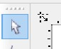
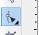
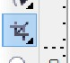

Corel DRAW
Corel DRAW adalah software pengolah gambar yang berbasis vektor. Corel DRAW termasuk software yang sederhana dan masih mudah dipahami daripada software pengolah gambar yang lain seperti photoshop, namun corel masih tetap full power dalam hal desain gambar terutama dalam bentuk vektor dengan fasilitas mendesain yang bisa dibilang cukup lengkap.
Baiklah, tanpa basa-basi langsung saja kita mulai belajar corel draw dari dasar, yaitu mengenal tools yang ada pada corel dan penjelasannya
- Pick Tool

digunakan untuk memilih objek yang akan kita pakai. Bisa untuk memilih, menggeser, memperbesar, dan memutar.- Shape Tool

kegunaanya sama seperti Pict Tool, tapi shape tool digunakan untuk memilih node.- Crop Tool

seperti namanya, digunakan untukmengcrop(maksa amat :P) memotong objek.
Putra R
Copyright© 2014 by Putra Rahmadi